Eine Ruine mit Aussicht
Ein unfertiger Rohbau über der Küste, voller Graffiti, ohne Fenster, ohne Geländer. Klingt nicht nach Highlight. Genau dort sind aber unsere schönsten Sonnenuntergangsfotos entstanden.

Wilder und ruhiger als Bali. Wir sind 17 Nächte geblieben, sieben in Senggigi und zehn in Kuta.
Guide entdeckenViele fahren auf Lombok nur durch, auf dem Weg zu den Gili-Inseln oder auf den Vulkan Rinjani. Wir sind geblieben: zuerst in Senggigi an der Westküste, dann in Kuta ganz im Süden.
Ohne Roller oder Fahrer kommst du hier nicht weit. Dafür ist an vielen Stränden deutlich weniger los als auf Bali.

Zwei Unterkünfte, 17 Nächte, zusammen 243 Franken. Und eine Katze, die im Warung einfach auf uns eingeschlafen ist.
Gebucht haben wir zwei Orte. Geblieben sind uns vor allem die Aussichten.


Ein unfertiger Rohbau über der Küste, voller Graffiti, ohne Fenster, ohne Geländer. Klingt nicht nach Highlight. Genau dort sind aber unsere schönsten Sonnenuntergangsfotos entstanden.
Rund um Kuta gibt es Hügel mit Blick auf Buchten und Riffe. Bei Ebbe liegt das Wasser flach zwischen den Felsen. Unser Favorit: der Bukit Merese zum Sonnenuntergang.
Rund 6 Kilometer östlich von Kuta liegt der Mandalika Circuit, hier fährt die MotoGP den Grand Prix von Indonesien. Wir standen auf der leeren Tribüne, zwischen lauter bunten Sitzen. Ziemlich surreal.
Die Frage hatten wir vor der Reise auch. Wir haben einfach beide ausprobiert, und unsere Antwort ist ziemlich klar.
Der Ort für Sonnenuntergänge am Meer und kurze Wege zum Hafen Bangsal, von dem die Boote zu den Gilis fahren. Senggigi zieht sich fast 10 Kilometer der Küstenstrasse entlang. Einen richtigen Dorfkern gibt es kaum, dafür Strände, Aussichtspunkte und Tempel in der Nähe. Mit Roller oder Fahrer bist du am flexibelsten. Uns hat es hier gefallen.
Kuta ist die Basis für die Strände und Surfspots im Süden. Es gibt ein Zentrum mit Cafés, Warungs und Tour-Anbietern, die schönsten Strände liegen 15 bis 40 Minuten mit dem Roller entfernt. Ohne Roller oder Fahrer kommst du kaum weiter, Grab gibt es kaum. Für die Buchten und Mandalika ist Kuta praktisch. Kuta selbst ist aber einfach nicht der Ort für uns, mehr dazu im Fazit.
Wir waren sieben Nächte in Senggigi und zehn in Kuta. Hast du nur eine Woche, bleib an einem Ort, für uns wäre das Senggigi. Mit zwei Wochen geht beides. Zwischen Senggigi und Kuta liegen rund 65 Kilometer, mit Auto oder Fahrer rund anderthalb Stunden. Wir sind mit Grab gefahren. Mit dem Roller würden wir die Strecke nicht fahren, die Strassen sind nachts oft unbeleuchtet und in schlechtem Zustand. Ein Privatfahrer für einen Tag kostet 500’000 bis 700’000 IDR, rund 23 bis 33 Franken.
Zwei Küsten, zwei völlig verschiedene Stimmungen.
Hier sind die meisten unserer Sonnenuntergangsfotos entstanden.

Villa Hantu ist ein nie fertiggestellter Betonbau an einem Hang über dem Meer, an der Küstenstrasse nördlich von Senggigi (Jalan Raya Malimbu, Dorf Malaka). Den Namen haben ihr Jugendliche aufgesprayt, Hantu heisst Geist. Angeblich soll es da spuken. Die Wände sind vollgesprayt, die Fenster sind nur Öffnungen, und von der Terrasse siehst du über die ganze Küste.
Gefunden haben wir die Villa über ein YouTube-Video von anderen Reisenden. Für uns eines der besten Motive in Senggigi. Roh, ein bisschen wild, und genau das macht es aus.
Plan den Sonnenuntergang ein. Für den Rückweg lohnen sich feste Schuhe und eine Taschenlampe, und beim Fotografieren achtest du besser auf die Kanten hinter dir.
Das ist eine Baustelle ohne Aufsicht: Kanten, offene Öffnungen und Absätze ohne Geländer. Vor Ort haben wir gehört, dass es da schon mehrere tödliche Unfälle gegeben hat. Pass auf, wo du hintrittst, vor allem im Dunkeln. Einheimische betreiben daneben einen Parkplatz und verlangen 10’000 IDR, rund 50 Rappen. Ein offizielles Ausflugsziel ist es nicht.
Im Westen geht die Sonne direkt über dem Meer unter.

Senggigi zieht sich mehrere Kilometer der Küste entlang. In den späten 1990er-Jahren wurde hier viel gebaut, weil Lombok als das nächste Bali galt. Nach den Unruhen von 2000 und dem Anschlag auf Bali 2002 kamen viel weniger Touristen. Heute ist Senggigi deutlich ruhiger als Kuta oder die Gilis, und genau das hat uns gefallen.
Lohnt sich das? Wenn du in Senggigi wohnst, ja. Strand und Promenade liegen direkt im Westen, der Sonnenuntergang kommt ohne Anfahrt.
Schau auf der Karte, wo deine Unterkunft liegt. Der Weg zu Strand, Restaurants und Tempel kann ganz unterschiedlich lang sein.
Die bekannteste Sehenswürdigkeit ist der Pura Batu Bolong, ein hinduistischer Tempel mit 14 Altären auf einem Felsen am Strand. Bei Tempeln Schultern und Knie bedecken und vor Ort nach den Regeln fragen.
Ein Spaziergang mit Farbe.

An mehreren Mauern in Senggigi sind Meer, Schildkröten und Wellen aufgemalt. Aufgefallen ist uns auch eine Hausecke mit einem Engel.
Kein Programmpunkt, aber ein guter Grund, einmal zu Fuss die Strasse entlangzugehen.
Nimm dir ein paar Minuten, wenn du sowieso vorbeikommst. Mit dem Roller bist du schnell daran vorbei.
Ein Trottoir gibt es nicht überall. Pass auf den Verkehr auf.
Der Süden verändert sich schnell.

Kuta ist der Hauptort im Süden, nicht zu verwechseln mit Kuta auf Bali. Der Ort verändert sich rasant durch das Mandalika-Projekt: neue Hotels, eine neue Strandpromenade und eine MotoGP-Strecke. Aufgefallen sind uns bunte Skulpturen, ein Spielplatz mit Schaukeln und ein beleuchteter Ortsschriftzug.
Lohnt sich Kuta? Als Basis für die Strände und Hügel im Süden ja. Der Ort selbst ist eher Mittel zum Zweck. Uns haben die vielen kleinen Feuer, der Müll und die Möchtegern-Touristen gestört, und wir würden nicht mehr hin.
Grab gibt es in Kuta und im Süden kaum. Rechne mit Roller, Privatfahrer oder Hilfe deiner Unterkunft. Uns hat der Gastgeber einen Roller für 3 Franken am Tag besorgt.
Neue Bauprojekte heisst auch Baustellen und Lärm. Schau dir die Umgebung deiner Unterkunft vorher auf der Karte an.
Die Tribüne war leer, als wir da waren.

Der Pertamina Mandalika International Circuit ist die Strecke des MotoGP Grand Prix von Indonesien. 2026 war das Rennwochenende vom 9. bis 11. Oktober. Rund um die Strecke stehen Schriftzüge, ein Modell des Rundkurses und Skulpturen. Von unserem Homestay waren es zwei Minuten, und da, wo wir waren, war der Eintritt gratis.
Lohnt sich ein Abstecher? Wenn du Motorsport magst, ja. Auch ohne Rennen ist die leere Tribüne mit den bunten Sitzen ein spezieller Anblick.
Willst du ein Rennen sehen, buch Unterkunft und Billette früh. 2026 war es Tage vorher ausverkauft.
Ausserhalb der Rennwochenenden ist es hier sehr ruhig. Frag in deiner Unterkunft, ob und wann du aufs Gelände kommst.
Der Süden ist von oben am schönsten.

Rund um Kuta liegen Hügel mit Blick auf Buchten, Felsen und bei Ebbe weite Flächen aus Riff und Sand. Tanjung Aan ist ein rund 2 Kilometer langer Strand. Vom Bukit Merese, rund 11 Minuten zu Fuss vom Strand, hast du die beste Aussicht.
Für uns der schönste Teil des Südens. Zum Sonnenuntergang auf dem Bukit Merese sind wir mehrmals hochgelaufen. Oben waren viele Leute, alle wegen dem gleichen Sonnenuntergang. Und unten wartet mit Tanjung Aan ein richtig schöner Strand.
Schau vorher auf die Gezeiten. Bei Ebbe sieht die Bucht ganz anders aus als bei Flut. Nimm Wasser, Sonnenschutz und eine Lampe für den Rückweg mit.
Oben gibt es wenig Schatten und keine Geländer. Bleib auf den Wegen und halte am Rand Abstand. Mit Roller oder Fahrer kommst du am einfachsten hin.


Hier waren wir nicht selbst. Damit du trotzdem weisst, was dich wo erwartet, haben wir zu jeder Ecke der Insel das Wichtigste zusammengetragen.
Rund um Kuta liegen die schönsten Strände der Insel. Ohne Roller oder Fahrer kommst du aber an keinen davon.
Eine lange, geschützte Bucht mit Büffeln am Rand und Sonnenuntergang.
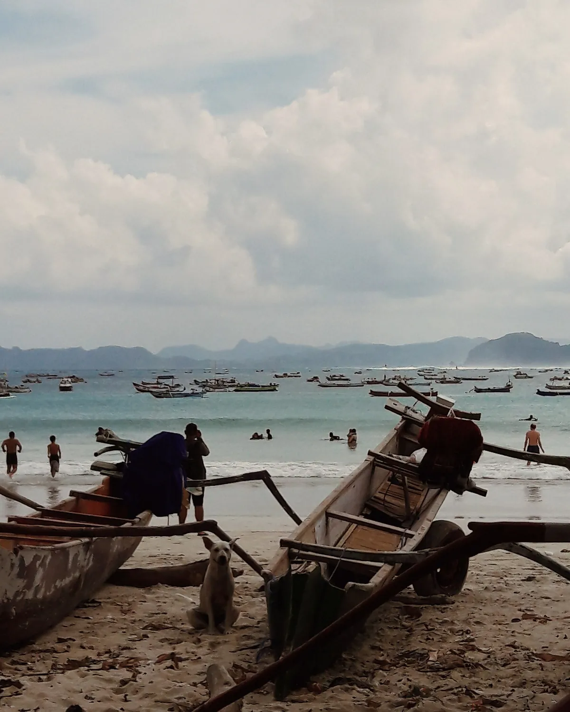
Selong Belanak liegt westlich von Kuta. Der weisse Sandstrand ist lang, auf beiden Seiten stehen grüne Hügel. Die Bucht schaut nach Westen, der Sonnenuntergang ist also der Höhepunkt. Direkt am Strand gibt es keine Bungalows, die Unterkünfte stehen 500 Meter bis 1,5 Kilometer landeinwärts.
Schwimmen und SurfenDie Bucht ist gut geschützt, das Wasser klar, manchmal siehst du Schildkröten. Für Anfänger gibt es das ganze Jahr Wellen von rund 0,6 bis 0,9 Metern über Sand. Boards und Kurse gibt es bei lokalen Läden. Am nahen Telawas Beach solltest du wegen der starken Strömung nicht schwimmen.
Essen und TrinkenAm Strand gibt es Warungs mit kaltem Bintang und Kokosnüssen. Für den Sonnenuntergang bieten sich die Strandbars Lantis am südlichen und Laut Biru am nördlichen Ende an.
Ab Kuta sind es rund 20 Kilometer und 30 bis 45 Minuten auf guter Strasse. An Markttagen wird es auf dem Rückweg eng. Ein Privattransfer ab Kuta kostet rund 200’000 bis 300’000 IDR, rund 9 bis 14 Franken. Am Strand fällt allenfalls eine Parkgebühr von rund 10’000 IDR an.
Von Juni bis August ist hier viel los. Willst du in Ruhe ankommen, bleib rund drei Nächte. Mit Zeit kannst du den rund 4 Kilometer langen Weg über Telawas und Semeti bis Mawi laufen, in eine Richtung, und dich zurückfahren lassen (bis Telawas rund 200’000 IDR, rund 9 Franken).
Eine Hufeisenbucht mit ruhigen Rändern und starken Wellen in der Mitte.
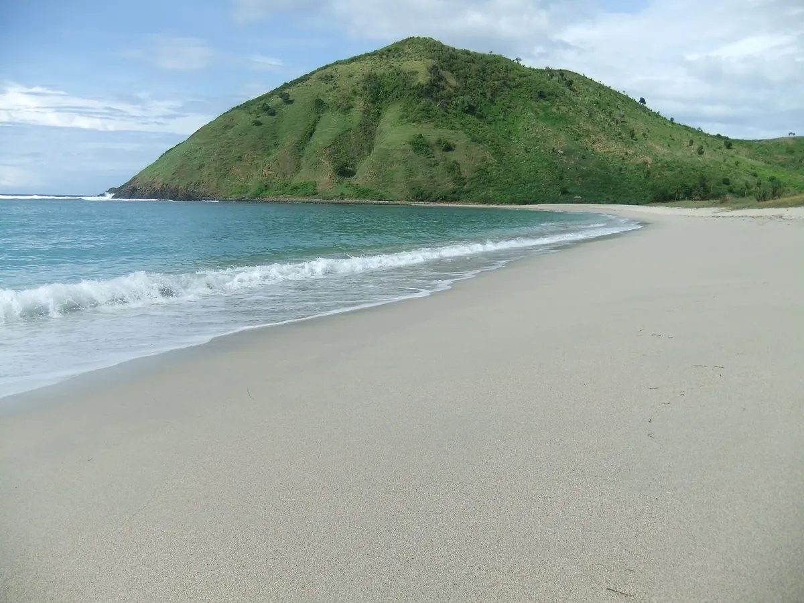
Mawun hat die Form eines Hufeisens. An den Seiten ist das Wasser ruhig, in der Mitte sind die Wellen stark und das Wasser tief. Schau also zuerst, bevor du schwimmst. Am besten kommst du früh am Morgen, dann hast du den Strand fast für dich. Leider treibt manchmal Abfall im Wasser.
Ab Kuta sind es rund 9 Kilometer und 15 Minuten, ohne Stau. Dazu kommt eine Parkgebühr von rund 10’000 IDR, rund 50 Rappen.
Weiter westlichMawi ist ein Strand für erfahrene Surfer, mit Wellen von rund 1,5 bis 1,8 Metern und abgelegener Stimmung. Hin geht es rund 30 Minuten über eine holprige Piste, mit Geländewagen. Tampah liegt 25 bis 30 Minuten westlich von Kuta, ist ruhig und hat kaum Verkäufer, die Zufahrt ist aber sehr schlecht. Lancing gilt als ruhig und relativ sauber.
Ein heller Strand und der Hügel mit der besten Aussicht im Süden. Hier waren wir selbst.
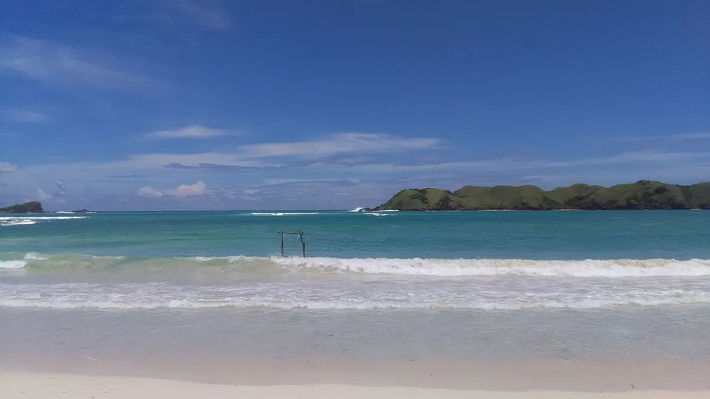
Tanjung AanRund 2 Kilometer Küste mit hellem Sand und flachem Wasser, ab Kuta rund 15 Minuten. Rechne mit Abfall, fliegenden Händlern und einem teuren Parkplatz. Zeitweise waren wegen eines geplanten Resorts keine Warungs offen, nimm also Wasser mit.
Bukit MereseDer Hügel bei Tanjung Aan hat eine Aussicht über die ganze Südküste, am besten zum Sonnenaufgang oder Sonnenuntergang. Wir waren mehrmals zum Sonnenuntergang oben. Mit dem Roller sind es rund 15 Minuten ab Kuta. Oft hängen Affen herum, die gern Wasserflaschen klauen. Parken und Eintritt kosten zusammen 10’000 IDR, rund 50 Rappen.
Seger und Tanjung BongoSeger hat türkisfarbenes Wasser, Eintritt 10’000 IDR, rund 50 Rappen. 2026 war hier der Hauptort des Festes Bau Nyale, mehr dazu weiter unten. Tanjung Bongo ist ruhig und kaum bebaut, mit einem natürlichen Pool. Mit dem Roller kostet es 5’000 IDR, rund 25 Rappen. Nambung und Batu Bereng an der Südküste sind lange, leere Strände mit einem kleinen Wasserfall, am besten bei Ebbe.
FledermaushöhleRund 10 Minuten von Kuta liegt eine Fledermaushöhle. Sie kostet 60’000 IDR pro Person, rund Fr. 2.80, die Fledermäuse fliegen zum Sonnenuntergang aus. Am Eingang riecht es, sagen wir, intensiv.
Surfspots, die du nur per Boot erreichst.
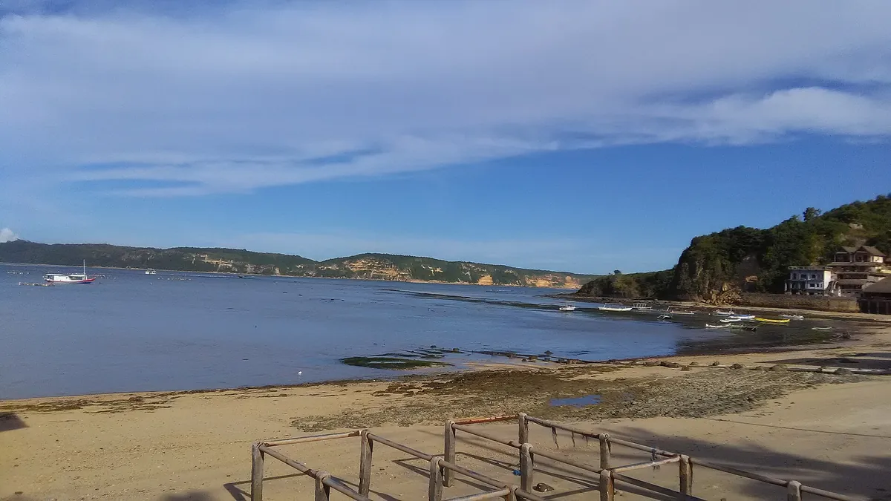
Gerupuk ist ein Dorf an der Südküste, mit dem Auto rund 20 Minuten östlich von Kuta. Die Wellen in der Bucht erreichst du nur per Boot.
Die WellenInside ist eine Rechtswelle, die für viele Levels funktioniert. Heute ist sie der Lernspot schlechthin und entsprechend voll, Surfcamps haben oft Vortritt. Outside ist wuchtiger und etwas für Erfahrene. Don Don braucht rund 1,5 Meter Welle oder mehr, ist selten voll und eher etwas für Fortgeschrittene.
Am besten ist es von März bis September, mit sauberen Wellen. In der Regenzeit gibt es Regen, Schlamm und Abfall im Wasser. Geschützte Spots wie Inside und Don Don haben fast immer eine brauchbare Welle.
Boot und KostenTaxiboote fahren von einer improvisierten Stelle gegenüber dem Surfshop Banyu ab, rund 100’000 IDR pro Person für zwei Stunden, rund Fr. 4.65. Nach Batu Payung fährt ein Boot ab Tanjung Aan für 50’000 IDR pro Person, rund Fr. 2.30. Surfcamps organisieren den Transport meistens selbst. Wer im Dorf schläft, ist früh und spät vor allen anderen im Wasser.
Schau auf den Wind: Batu Payung und die Bucht vertragen ihn schlecht. Zum Anfangen ist Selong Belanak die bessere Wahl.
Ein traditionelles Sasak-Dorf an der Strasse in den Süden.
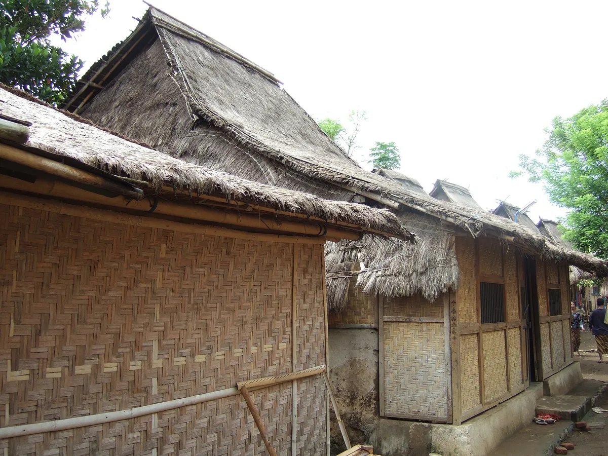
Sade ist ein traditionelles Sasak-Dorf bei Rembitan in Südlombok, bekannt fürs Weben. Es liegt zwischen dem Flughafen und Kuta. Die Sasak sind rund 85 Prozent der Bevölkerung Lomboks, die meisten sind Muslime. Dazu kommen die Wetu Telu, eine Glaubensrichtung, die es nur auf Lombok gibt. Sie beten dreimal statt fünfmal am Tag, gemischt mit Animismus und hindu-buddhistischen Einflüssen.
Offen ist das Dorf täglich von 7 bis 18 Uhr, Eintritt auf Spendenbasis.
Inzwischen ist das Dorf ziemlich touristisch. Willst du Webkunst kaufen, gibt es auch Sukarara, ein Weberdorf bei Mataram.
Rosa Sand aus Korallenresten, je nach Licht und Gezeit.
Der Strand liegt im Südosten bei Sekaroh im Bezirk Jerowaru. Der Sand ist rosa, weil sich Bruchstücke von roter Koralle mit dem weissen Sand mischen. Wie rosa er wirkt, hängt von Licht und Tageszeit ab. Zum Sonnenaufgang und Sonnenuntergang ist er am stärksten, bei Ebbe siehst du am meisten davon. Und manchmal wirkt er schlicht nicht pink. Schraub die Erwartungen also etwas runter.
Von Mataram oder Senggigi bis zum Hafen Tanjung Luar sind es bis zu 2 Stunden auf teils holpriger Strasse, danach rund 30 Minuten mit einem lokalen Boot. Ab Kuta sind es 1 bis 1,5 Stunden. Es gibt auch Tagestouren, oft mit Schnorchelhalten bei kleinen Inseln vor der Küste.
Rund 50’000 IDR pro Person, rund Fr. 2.30, dazu Parkgebühren von 9’000 bis 25’000 IDR.
Das Wasser ist meistens ruhig, die Einrichtungen sind einfach: kleine WCs und ein paar Warungs. Nimm Trinkwasser und Bargeld mit, Karten werden selten genommen. Schnorchelzeug gibt es bei lokalen Verleihern. Ein kurzer Aufstieg führt zu einem Aussichtspunkt. Die meisten bleiben einen halben bis ganzen Tag. Nimm weder Sand noch Korallen mit.
In der Trockenzeit von Mai bis September ist das Meer ruhiger und der Himmel klarer.
Hier liegt Senggigi, unsere erste Station auf Lombok. Von dort sind die Orte unten gute Halbtagesausflüge.
Ein Tempel auf dem Felsen am Meer und Aussichtspunkte an der Küstenstrasse.
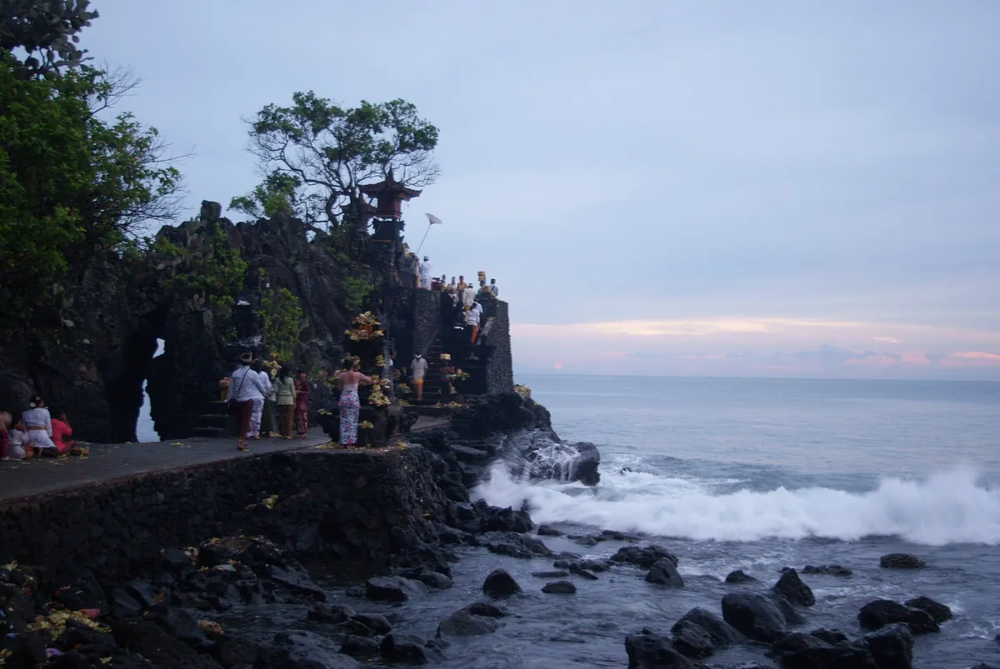
Der Hindu-Tempel Pura Batu Bolong steht südlich von Senggigi auf einem Felsen am Meer. Offen täglich von 7 bis 19 Uhr, Eintritt auf Spendenbasis. Am schönsten ist er zum Sonnenaufgang oder Sonnenuntergang. Vor dem Felsen kann man gut schnorcheln.
Die Küstenstrasse nach NordenNördlich von Senggigi liegen die Aussichtspunkte Malimbu und Malaka mit Parkplatz, ein guter Halt auf dem Weg nach Bangsal. Noch weiter nördlich liegen ruhigere Strände wie Nipah, Pandanan und Setangi. Alle schauen nach Westen, du hast also Sonnenuntergang. Am schönsten ist eine Rollerfahrt die Küste hoch.
Baden und WasserfälleSchwimmen geht bei Ebbe nicht überall, und in Senggigi selbst gibt es ab und zu Strömungen, auch beim Schnorcheln. Die Wasserfälle Tiu Pupus und Tiu Pituq bei Senggigi führen im Oktober oft kaum Wasser.
Die Hauptstadt mit Wasserpalast und einem Tempel für zwei Glaubensrichtungen. Mit dem Roller waren wir in Mataram.
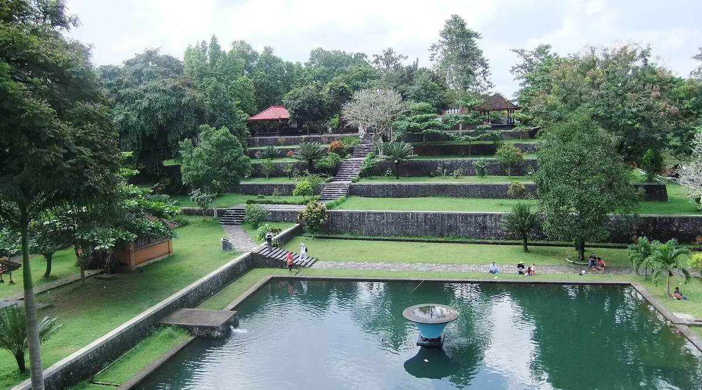
MataramMataram ist die Hauptstadt und grösste Stadt Lomboks, mit rund 445’000 Einwohnern (Schätzung 2024). Von Senggigi sind es rund 13 Kilometer bis in die Stadt, bis zum Wasserpalast Mayura 17 Kilometer und 21 Minuten, ohne Stau.
MayuraDer Wasserpalast kostet 10’000 IDR, rund 50 Rappen, offen täglich von 7 bis 18 Uhr.
NarmadaDer Narmada-Park stammt von 1727. Er kostet 30’000 bis 50’000 IDR, rund Fr. 1.40 bis 2.30, und lohnt sich eher, wenn du länger als eine Woche auf der Insel bist. Ab Senggigi sind es rund 26 Kilometer und 26 Minuten, ab Kuta rund 42 Kilometer und 39 Minuten.
LingsarDer Tempel Pura Lingsar stammt von 1714 und wird von Hindus und Wetu-Telu-Gläubigen genutzt. Ab Senggigi sind es rund 22 Kilometer und 26 Minuten.
Töpfern und WebenBanyumulek ist ein Töpferdorf, Sukarara ein Weberdorf, rund 20 Minuten Fahrt auseinander. Beide sind gut für Souvenirs.
Die ruhigen Inseln im Südwesten, ohne Fähre.
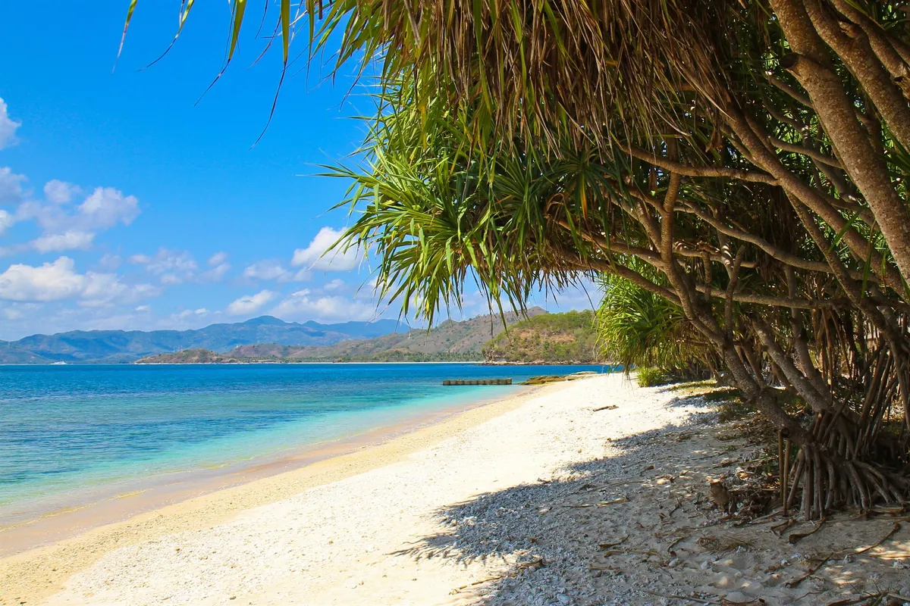
Sekotong ist die Halbinsel im Südwesten Lomboks und fürs Tauchen bekannt. Vor der Küste liegen Gili Nanggu, Gili Sudak und Gili Kedis, oft Secret Gilis genannt. Fähren gibt es keine, du kommst nur mit Privatboot oder gebuchter Tour hin.
Die drei InselnGili Sudak gilt als die beste zum Schnorcheln, mit bunten Fischen nah am weissen Sandstrand. Auf Gili Nanggu gibt es ein kleines Fischerdorf mit ein paar Restaurants, und du kannst landeinwärts an den Häusern der Fischer vorbeigehen. Gili Kedis ist so klein, dass du in rund drei Minuten einmal rum bist, mit weissem Sand und viel Leben unter Wasser.
Die Boote starten am Anleger in Sekotong. In die Gegend sind es ab Mataram rund 36 Kilometer und 33 Minuten, ab Senggigi 49 Kilometer und 47 Minuten, ab Kuta rund 2 Stunden mit dem Roller. Die Tagestour dauert gut 12 Stunden, die Boote müssen vor Sonnenuntergang zurück sein.
Eine Tagesfahrt zu allen drei Inseln mit Schnorchelzeug gab es zuletzt nach etwas Verhandeln ab rund 13 Euro. Verhandeln lohnt sich hier wirklich.
Die Gegend entwickelt sich schnell, gute Möglichkeiten zum Essen gibt es noch wenige.
Hier brauchst du Zeit oder einen Fahrer. Dafür gibt es Wasserfälle, Reisfelder und Vulkanblick statt Strandbar. Genau hierhin würden wir beim nächsten Mal.
Zwei Wasserfälle am Fuss des Rinjani, mit Wasser das ganze Jahr.
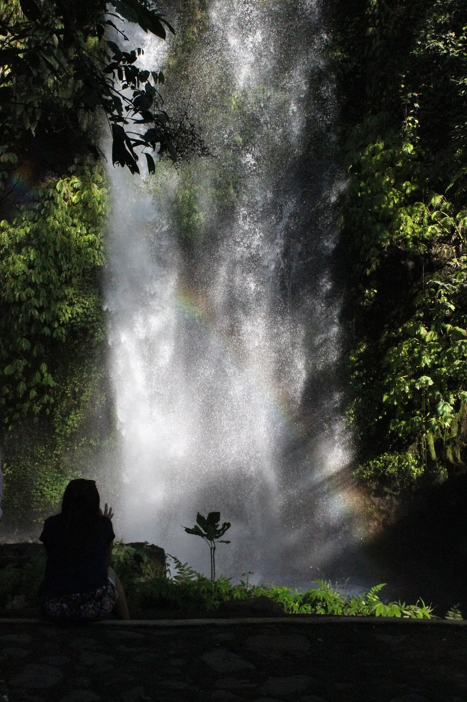
Senaru ist das Dorf im Norden, von dem aus viele auf den Rinjani gehen. Hier liegen auch zwei Wasserfälle. Sendang Gile ist der bekanntere, hier fällt das Wasser rund 50 Meter tief. Von Senaru läufst du etwa 20 Minuten durch tropischen Wald hin.
Tiu KelepTiu Kelep liegt 40 bis 60 Minuten oberhalb von Sendang Gile, mit steilem Aufstieg und Bachquerung. Unten wartet ein kühles Becken zum Baden. Hier ist ein Guide sinnvoll. Plan grosszügig, mit zwei Flussquerungen dauert es gern länger.
Eintritt und Zeiten20’000 bis 25’000 IDR, rund Fr. 1.– bis 1.15, offen von 7 bis 17 Uhr. Beide Fälle führen das ganze Jahr Wasser, anders als andere Wasserfälle in der Trockenzeit.
Ab Senggigi sind es rund 83 Kilometer und 71 Minuten, ab Kuta rund 132 Kilometer und 116 Minuten, ohne Stau. Ein Taxi oder Charter ab Westlombok kostet rund 300’000 bis 400’000 IDR, rund 14 bis 19 Franken. Öffentliche Busse fahren selten und ohne verlässlichen Fahrplan.
Inoffizielle Guides können aufdringlich sein. Für Sendang Gile ist kein Guide Pflicht. Nimmst du einen, mach den Preis vorher ab und lass dir die Bewilligung (Izin) zeigen. Zum Vulkan steht der aktuelle Stand weiter oben im Abschnitt Rinjani.
Ein Hochtal am Fuss des Rinjani, mit einem Hügel für den Sonnenaufgang.
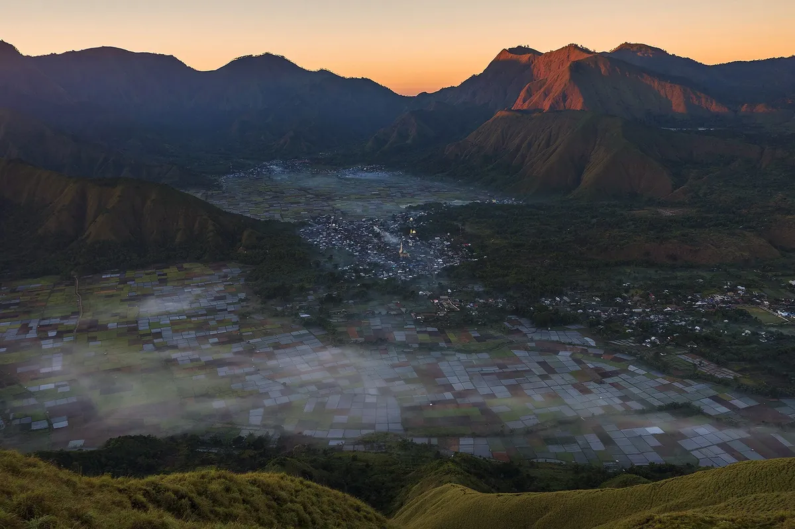
Sembalun liegt in Ostlombok in einem Hochtal am Fuss des Rinjani. Über dem Dorf Sembalun Lawang steht der Hügel Bukit Pergasingan auf rund 1’700 Metern. Er gilt als deutlich leichtere Alternative zum Vulkan.
Die WanderungDer Aufstieg dauert je nach Tempo 2 bis 4 Stunden, über Grashänge, Wald und Felsen. Ein lokaler Guide ist empfehlenswert, Eintritt kostet es keinen. Für den Sonnenaufgang musst du sehr früh los oder oben zelten, frag vor Ort, wie das geregelt ist. Oben ist es kühl, pack eine Jacke ein.
Am besten in der Trockenzeit von April bis September. Nimm Wasser und Snacks mit und deinen Abfall wieder runter, oben gibt es kaum etwas. Bei gutem Wetter fliegen manchmal Gleitschirme.
Ab Mataram sind es rund 86 Kilometer und 72 Minuten, ab Senggigi 101 Kilometer und 79 Minuten, ab Kuta 100 Kilometer und 87 Minuten, ohne Stau.
Zwei Wasserfälle am Südhang des Rinjani, die auch in der Trockenzeit Wasser führen.
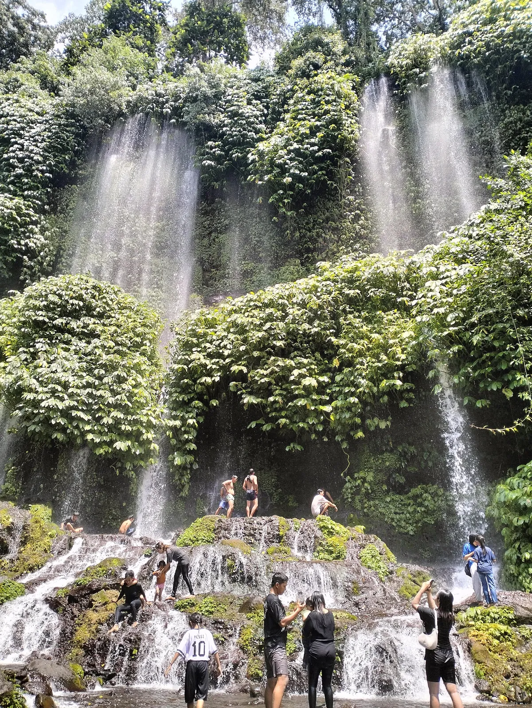
Die beiden Wasserfälle liegen am Südhang des Rinjani und haben auch in der Trockenzeit Wasser.
Ab Senggigi sind es 49 Kilometer und 54 Minuten, ab Kuta 52 Kilometer und 58 Minuten, ohne Stau.
Ein Fahrer für den Tag macht es einfach. Lass keine Wertsachen im Auto. Den Eintritt zahlst du vor Ort.
Reisterrassen und kleine Wasserfälle, ruhiger als Ubud.
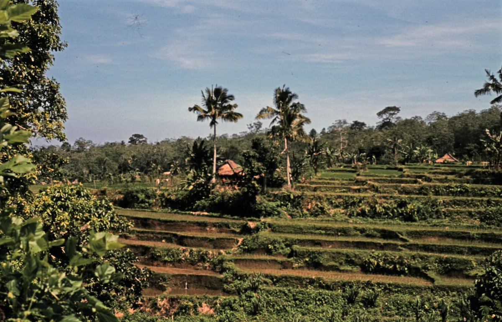
Tetebatu liegt in Ostlombok, mit Reisterrassen, Blick auf den Rinjani und mehreren kleinen Wasserfällen. Es wirkt ruhiger und weniger touristisch als Ubud auf Bali.
Der Tetebatu-Wasserfall kostet 20’000 IDR, rund 90 Rappen. Der Weg führt durch Reisfelder und über einen Dschungelpfad mit Bambusstufen. Der Fall selbst ist eher klein, der Weg dorthin ist die Hauptsache. Der Tibu Bunter kostet 25’000 IDR, rund Fr. 1.15, von Sarang Walet geht es rund 20 Minuten bergauf. Am Sonntag gibt es dort Canyoning. Sarang Walet gilt als touristisch, behalt dort deine Sachen bei dir, es gab Diebstähle. Der Affenwald kostet rund 30’000 IDR, rund Fr. 1.40, und ist am Morgen am ruhigsten. Pflicht ist ein Guide nirgends.
Ab dem Flughafen rechnest du realistisch mit rund 2 Stunden, ab Senggigi oder Kuta mit 2 bis 3. Das Navi verspricht weniger, glaub ihm nicht. Grab gibt es dort keins, du brauchst einen Privattransfer oder einen Roller.
Plan mindestens zwei Tage ein. Ein E-Bike kostet rund 100’000 IDR pro Tag, rund Fr. 4.65. Fahr nicht im Dunkeln, die Strassen sind kaum beleuchtet. Am besten ist die Trockenzeit von Mai bis September.
Die Fotos in diesem Abschnitt stammen von Wikimedia Commons und stehen unter freien Lizenzen. Wo die Lizenz eine Nennung verlangt, steht sie hier:

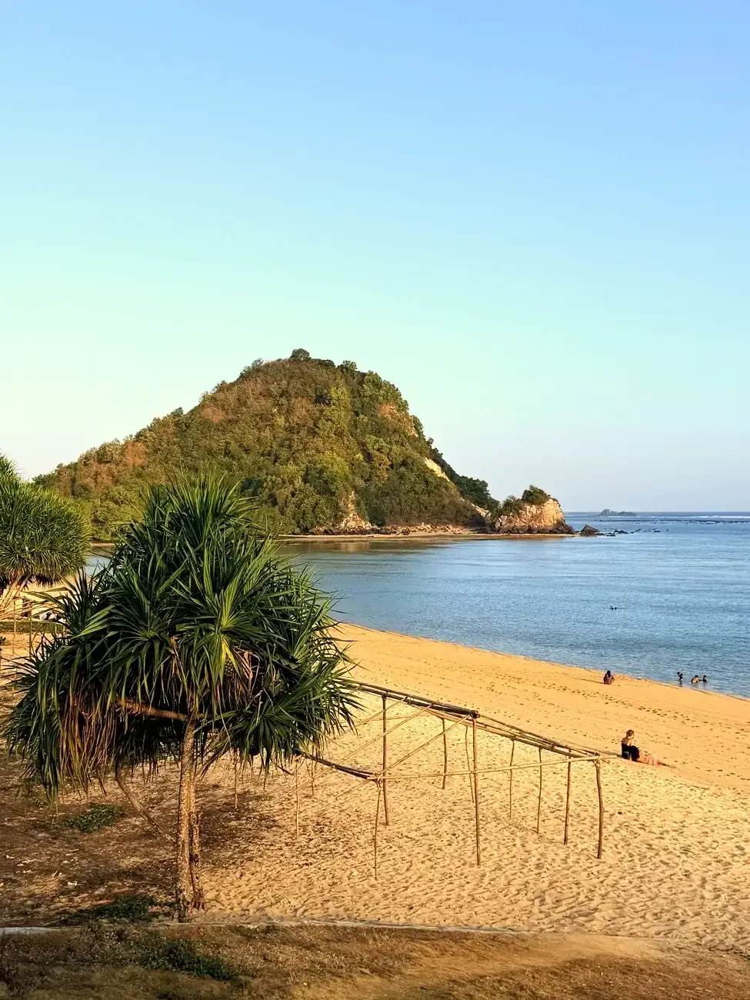

Zwei Dinge, die dir bei der Planung der Ausflüge helfen.
In der Trockenzeit sind nicht alle Wasserfälle gleich eindrücklich. Tiu Pupus und Tiu Pituq bei Senggigi haben im Oktober oft kaum Wasser. Sendang Gile und Tiu Kelep haben das ganze Jahr Wasser, Benang Stokel und Benang Kelambu auch in der Trockenzeit. Reist du im Hochsommer, plan eher die letzten beiden ein.
Bau Nyale ist ein Fest in Zentrallombok, bei dem Seewürmer gefangen werden. Es erinnert an Prinzessin Mandalika. Der Höhepunkt war 2026 in der Nacht vom 7. auf den 8. Februar, mit Pantai Seger bei Kuta als Hauptort. Den Termin legen Sasak-Älteste jedes Jahr nach ihrem Kalender fest. Für 2027 steht er noch nicht fest.


Der Rinjani ist mit 3’726 Metern der zweithöchste Vulkan Indonesiens und das bekannteste Trekking-Ziel der Insel. Wir haben ihn nicht bestiegen, beim nächsten Mal soll es so weit sein. Wer es vorhat, sollte wissen, was sich 2026 alles geändert hat. Prüf Öffnung, Regeln und Preise kurz vor der Reise.
2026 war der Berg wegen extremer Wetterbedingungen ab dem 1. Januar gesperrt und öffnete Ende März beziehungsweise am 1. April wieder. Prüf den Stand vor deiner Buchung. Die Nationalparkverwaltung hat die Sicherheitsregeln überarbeitet: Wandernde bekommen RFID-Armbänder und persönliche Sender, mit denen ihre Position verfolgt wird.
Im Spätsommer kam eine neue Einschränkung dazu. Am 1. September öffnete der Berg nur eingeschränkt wieder, mit strengeren Kontrollen und Gepäckchecks wegen Waldbrandgefahr. Die Online-Buchung über die App eRinjani war damals ausgesetzt. Am 22. September brach am Setampol-Hügel im Gebiet Torean ein Waldbrand aus, bis zum 29. September waren rund 1’098 Hektar betroffen. Die Route ab Senaru war gesperrt und ist seit Samstag, 3. Oktober 2026, wieder offen. Damit sind fünf Routen wieder in Betrieb: Sembalun, Senaru, Timbanuh, Tetebatu und Aik Berik. Torean steht nicht auf der Liste, frag dort vorher nach. Registriert wird wieder online über die App eRinjani.
Für Ausländer kostet der Park auf den Hauptrouten Sembalun, Senaru und Torean 250’000 IDR, rund Fr. 11.60, auf den Nebenrouten Timbanuh, Aik Berik und Tetebatu 200’000 IDR, rund Fr. 9.30.
Die Bewilligung (eRinjani) buchst du vorab über einen lizenzierten Anbieter, am Tor bekommst du sie nicht. Für Juli und August am besten zwei bis drei Monate im Voraus, in der Nebensaison klappt es oft auch kurzfristig. 180 bis 250 US-Dollar für drei Tage sind üblich. Vergleich aber, ob Parkgebühr, Bewilligung, Träger und Essen wirklich drin sind.
Am beliebtesten sind drei Tage und zwei Nächte, von Sembalun über den Gipfel und den Kratersee Segara Anak nach Senaru. Kürzer ist die Gipfelvariante ab Sembalun mit einer Übernachtung. Eine dritte Route endet in Torean und soll weniger überlaufen sein. Gruppentouren kosten 180 bis 250 US-Dollar pro Person, rund 150 bis 210 Franken, private Touren ab 210 US-Dollar, rund 175 Franken. Drin sind unter anderem Bewilligungen, Guide, Träger, Zelt und Essen.
Januar bis März lässt du besser aus.
Frag den Anbieter nach Gruppengrösse, Erste-Hilfe-Ausbildung der Guides, Notfallplan und Ausrüstung. Prüf, ob deine Reiseversicherung Bergungskosten in dieser Höhe deckt, unsere Hinweise stehen im Beitrag zur Auslandskrankenversicherung. Die Pakete enthalten Guide und Träger. Ob du überhaupt ohne gehen darfst, klärst du am besten direkt beim Nationalpark.


Von Lombok aus erreichst du die Gilis über den Hafen Bangsal. Wir waren zwei Wochen auf Gili Air und sind danach mit der Fähre rüber nach Lombok. Am Pier haben wir einen Fahrer genommen, der uns nach Senggigi gebracht hat.
Das öffentliche Boot braucht rund 15 bis 25 Minuten nach Gili Air. Die Preise schwanken zwischen 8’000 und 50’000 IDR, rund 40 Rappen bis Fr. 2.30, am Hafenschalter siehst du den aktuellen Tarif. Schnellboote kosten rund 25 bis 45 US-Dollar. Das öffentliche Boot fährt oft erst, wenn genug Leute drauf sind. Die Abfahrten ändern sich mit Wetter und Saison.
Zu Gili Air gibt es einen eigenen Guide mit Karte, Schnorcheln, Kosten und unseren Erlebnissen. Dort steht auch, wie sich Gili Air, Gili Trawangan und Gili Meno unterscheiden.
So sind wir in die Weltreise gestartet. Mit echten Nächten und echten Preisen, falls du die Strecke nachreisen willst.
Du fliegst direkt oder kommst von Bali mit Fähre, Schnellboot oder Kurzflug. Wir kamen von Gili Air.
Der Lombok International Airport (LOP) liegt in Zentrallombok bei Tanak Awu, nicht weit von Praya, und ist seit Oktober 2011 in Betrieb. Direkt fliegen Scoot ab Singapur (seit Juni 2026 zehnmal pro Woche) sowie AirAsia und Lion Air ab Kuala Lumpur. Von Bali fliegen Wings Air und TransNusa direkt nach Lombok, zusammen rund zehn Flüge pro Tag, in der Luft bist du etwa 40 bis 45 Minuten. Die Preise schwanken stark, vergleich sie für dein Datum.
Ab dem Flughafen sind es nach Kuta rund 25 Kilometer und 30 bis 45 Minuten, nach Senggigi rund 38 Kilometer und 45 bis 60 Minuten, nach Mataram rund 28 Kilometer und 30 bis 40 Minuten. Nach Senggigi zahlst du für Grab oder Taxi rund 130’000 bis 250’000 IDR, rund 6 bis 12 Franken. Am Terminal gibt es ausserdem einen offiziellen Taxischalter mit festen Preisen.
Die langsame Fähre fährt von Padang Bai auf Bali nach Lembar auf Lombok und braucht im Schnitt rund 4,5 Stunden, bei Wetter oder Stau im Hafen auch länger. Der Tarif für Fussgänger lag Ende 2025 bei 65’300 IDR, rund 3 Franken. Billette gibt es seit 2024 nur noch online über die Ferizy-App oder -Website, beim Check-in brauchst du den Pass. Die Fähren fahren rund um die Uhr. Nach dem Fahrplan vom Juli 2026 gab es mindestens 13 Abfahrten pro Tag, die erste um 6.30 Uhr. Der Fahrplan kann sich jederzeit ändern. Die Klimaanlage an Bord ist eiskalt, nimm einen Pulli mit. Nach etwa einer Stunde wird es oft ruppig, bei schlechtem Wetter wartest du besser einen Tag.
Von Lembar zur Unterkunft zahlst du für ein Mototaxi rund 100’000 bis 150’000 IDR, rund 5 bis 7 Franken, für ein Auto bis etwa 400’000 IDR, rund 19 Franken. Mach den Preis vor der Fahrt ab und lauf ein Stück vom Terminal weg, dann wird er besser. Schnellboote fahren ab Padang Bai nach Bangsal, je nach Anbieter ab rund 14 Euro. Für die Überfahrt zu den Gilis zahlst du rund 350’000 bis 600’000 IDR, rund 16 bis 28 Franken.
Es fahren auch Schnellboote von Padang Bai direkt nach Senggigi. Je nach Anbieter dauert es rund 1 Stunde 15 Minuten bis 2 Stunden 45 Minuten und kostet ab etwa 17 bis 21 Euro. Manche fahren täglich, andere nur an drei Tagen pro Woche. Reist du als Touristin oder Tourist nach Bali ein, zahlst du dort eine Touristenabgabe von 150’000 IDR pro Person, rund 7 Franken, einmal pro Besuch, vorab auf lovebali.baliprov.go.id.
Fahrpläne und Preise ändern sich, prüf sie vor der Abreise.


Lombok ist gross und die Wege sind lang. Ohne Roller oder Fahrer kommst du im Süden kaum an die schönen Strände.
Wir hatten auf Lombok die ganze Zeit einen Roller, in Kuta für 3 Franken am Tag, organisiert von unserem Gastgeber. Damit sind wir überall hingekommen: zu den Monkey Hills, nach Mataram und in die Buchten im Süden. Ein Automatikroller mit 110 bis 125 ccm kostet rund 60’000 bis 80’000 IDR pro Tag, rund 3 bis 4 Franken, pro Woche günstiger. Über die Unterkunft zahlst du eher 70’000 bis 100’000 IDR. Du brauchst einen internationalen Führerausweis mit Motorrad-Kategorie, ohne liegt die Busse bei etwa 250’000 IDR, rund 12 Franken. In Indonesien herrscht Linksverkehr. Helm auf, und schau vorher, ob deine Reiseversicherung Rollerunfälle überhaupt deckt.
Grab ist in Mataram und am Flughafen meistens schnell da, in Senggigi mal so, mal so, in Kuta und im Süden kaum. Von Senggigi nach Kuta sind wir mit Grab gefahren. Bemos kosten 5’000 bis 15’000 IDR, fahren ohne Fahrplan und erst, wenn sie voll sind, am besten klappt es zwischen 7 und 12 Uhr. Ein Privatfahrer für einen ganzen Tag kostet rund 500’000 bis 700’000 IDR mit Benzin, rund 23 bis 33 Franken.
Lombok ist günstig. Unsere Unterkünfte kosteten zusammen 243 Franken für 17 Nächte, also rund 14 Franken pro Nacht zu zweit. Dazu der Roller für 3 Franken am Tag und Essen im Warung für ein paar Franken. Hier die übrigen Preise, die du kennen solltest. Kurs: 1 Franken entspricht rund 21’500 IDR.
| Ausgabe | Einordnung | Richtwert |
|---|---|---|
| Visum bei Ankunft | 30 Tage, aktuell gültige Gebühr | 500’000 IDR (rund 23 Franken) |
| Langsame Fähre Padang Bai nach Lembar | Pro Person, Tarif Ende 2025 | rund 65’000 IDR (rund 3 Franken) |
| Lembar zur Unterkunft | Mototaxi oder Auto | 100’000 bis 150’000 IDR oder rund 400’000 IDR (5 bis 7 Franken oder 19 Franken) |
| Flughafen nach Senggigi | Grab oder Taxi | rund 130’000 bis 250’000 IDR (rund 6 bis 12 Franken) |
| Roller | Pro Tag | 60’000 bis 80’000 IDR (rund 3 bis 4 Franken) |
| Privatfahrer | Ganzer Tag inklusive Benzin | 500’000 bis 700’000 IDR (rund 23 bis 33 Franken) |
| Bemo | Kurze bis mittlere Strecke | 5’000 bis 15’000 IDR (unter 1 Franken) |
| Öffentliches Boot Bangsal nach Gili Air | Pro Person | Richtwert 15’000 bis 25’000 IDR (rund Fr. 0.70 bis 1.15) |
| Rinjani, drei Tage in der Gruppe | Gruppentour mit Guide und Trägern | 180 bis 250 USD (rund 150 bis 210 Franken) |
Zum Visum: Im August 2026 wurden höhere Gebühren angekündigt, 750’000 IDR online und 1’000’000 IDR bei Ankunft. Bis Anfang Oktober galt das noch nicht. Den aktuellen Betrag findest du im offiziellen e-Visa-Portal. Was wir für Unterkunft und Essen bezahlt haben, steht weiter unten.


In Senggigi haben wir in den Senggigi Cottages gewohnt, und da hat einfach alles gepasst. Der Besitzer hat uns bei der Ankunft alles gezeigt und war sehr gastfreundlich. Das Zimmer: einfach, mit Klimaanlage, Fernseher und Minibar. Preis-Leistung top. Senggigi zieht sich der Küste entlang, wie weit du zu Strand, Restaurants und Tempel läufst, hängt also stark davon ab, wo genau du schläfst. Schau vor dem Buchen auf die Karte. Preis: 102 Franken für 7 Nächte, rund Fr. 14.60 pro Nacht (Sommer 2026).

Das Fullmoon Homestay in Kuta war das Gegenteil: sehr einfach. Der grösste Luxus war die Klimaanlage. Den Boden haben wir zuerst selbst richtig geputzt, warmes Wasser gab es keins, einen Kühlschrank auch nicht, und aus dem Bad hat es gestunken. Warum wir trotzdem zehn Nächte geblieben sind? Die Lage abseits war für uns super, weil uns der Gastgeber einen Roller für 3 Franken am Tag besorgt hat. Dazu herzige Katzen, eine kleine Babykatze und ab und zu ein paar Affen, die Radau machen. Der Mandalika Circuit liegt zwei Minuten entfernt. Preis: 141 Franken für 10 Nächte, rund Fr. 14.10 pro Nacht (Sommer 2026).
Die Preise sind das, was wir im Juli und August 2026 tatsächlich bezahlt haben.

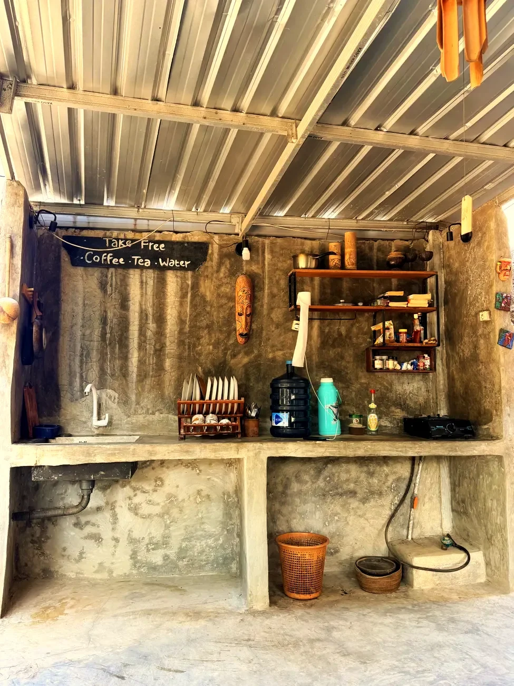

Meistens haben wir in kleinen Lokalen gegessen. Preise und Öffnungszeiten ändern sich dauernd, darum gibt es hier keine Speisekarten, nur das, was bei uns auf dem Teller lag.
Zum Znacht gab es Nasi Goreng mit Spiegelei oder Satay mit Reis. Im Warung SKS und im Warung Hans waren wir mehrmals. Auf einer Karte stand als Motto «Taste never lie». Über die Grammatik reden wir nicht. Nasi Goreng und Satay gehen immer, wenn du die Karte nicht kennst.
In Kuta haben wir im Boom Burger einen Burger gegessen. Im Luis Warung hat uns eine orange Katze adoptiert: Sie sprang hoch, rollte sich auf uns zusammen und schlief ein. Zum Zmorge gab es Omelett mit Banane. Und auf dem Heimweg vom Gulasch Garden haben wir an einem Abend mitgeholfen, einen brennenden Bauernhof zu löschen. Die ganze Geschichte steht in Lombok ehrlich.
| Gericht | Was es ist |
|---|---|
| Ayam Taliwang | Gegrilltes junges Huhn mit Chili, Zwiebeln und Garnelenpaste, scharf mit einer Spur Süsse. Stammt aus Taliwang bei Mataram. |
| Plecing Kangkung | Wasserspinat mit Sprossen, Kokosraspeln und Tomaten-Sambal. Die klassische Beilage zu gegrilltem Fleisch und Fisch. |
| Nasi Balap Puyung | Reis mit scharf gewürztem Hühnerfleisch, Sambal, Kokos und frittierten Sojabohnen. Günstig und beliebt zum Zmorge. |
| Sate Bulayak | Rindsspiesse mit dicker Erdnuss-Kokos-Sauce und Reiskuchen in Palmblättern. |
| Sate Rembiga | Rindsspiesse mit würziger Erdnusssauce, benannt nach dem Stadtteil Rembiga bei Mataram. |
| Sayur Ares | Gemüse aus dem Kern junger Bananenstämme in roter, gewürzter Kokosmilch, oft bei Sasak-Festen serviert. |
| Beberuk Terung | Salatartiger Sambal aus rohen Auberginen, langen Bohnen und Tomaten. Passt zu Fisch und Huhn. |
Typisch ist die Schärfe. Magst du es milder, bestell tidak pedas.

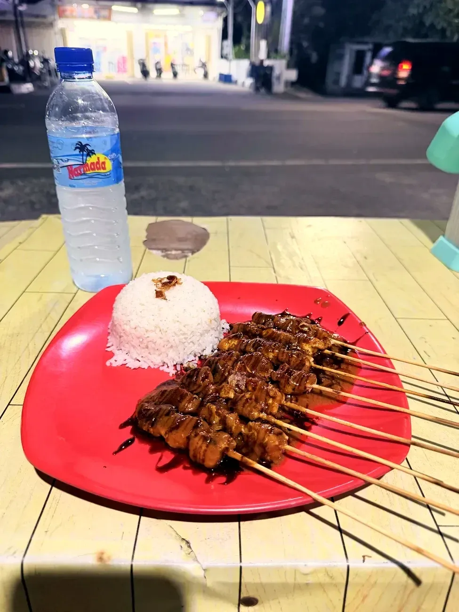

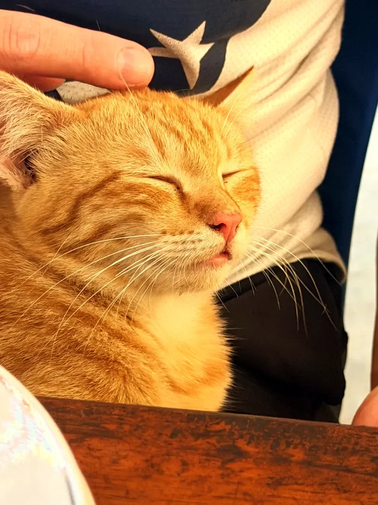


Die Werte gelten für Mataram an der Westküste, im Süden kann es etwas anders sein.
| Zeitraum | Wetter und Reisealltag | Einordnung |
|---|---|---|
| Mitte April bis Oktober | Trockenere Zeit. Der August ist mit rund 31 Millimetern Regen der trockenste Monat. | Die beste Reisezeit. Juni bis September ist Hochsaison, dann ist mit höheren Preisen zu rechnen. |
| November bis April | Regenzeit. Dezember bis Februar sind am nassesten, der Dezember bringt rund 248 Millimeter. Der Regen fällt meist in kurzen, heftigen Güssen von 30 bis 90 Minuten. | Mehr Flexibilität einplanen. Den Rinjani meidest du von Januar bis März besser; 2026 war der Berg ab dem 1. Januar gesperrt und öffnete Ende März beziehungsweise am 1. April wieder. |
| Das ganze Jahr | Tagsüber meist 30 bis 32 Grad, nachts 20 bis 23 Grad, das Meer 27 bis 30 Grad. | Baden ist fast immer möglich. |
| Ramadan 2027 | Voraussichtlich vom 8. Februar bis 8. März, Eid al-Fitr am 9. März. Der Beginn hängt von der Mondsichtung ab. | Lombok ist mehrheitlich muslimisch; Öffnungszeiten und Stimmung können sich verändern. |
Wir waren im Juli und August da. Mehr zu ganz Südostasien steht in unserem Beitrag zur besten Reisezeit.


Am einfachsten via Singapur, von dort fliegt Scoot direkt nach Lombok. Oder du fliegst nach Bali, 17 bis 22 Stunden ab Zürich mit einem Umstieg, und nimmst dann Fähre, Schnellboot oder Kurzflug. Hin und zurück nach Bali kostet meistens 650 bis 900 Franken.
Du brauchst den internationalen Führerausweis vom Strassenverkehrsamt deines Kantons. Je nach Kanton kostet er 20 bis 50 Franken und gilt drei Jahre, immer zusammen mit dem Schweizer Ausweis. Steht keine Motorrad-Kategorie drin, zahlt nach einem Unfall keine Versicherung. Der Vermieter fragt selten danach. Die Versicherung schon.
Die Grundversicherung zahlt Notfälle im Ausland höchstens bis zum doppelten Betrag, den die Behandlung in der Schweiz kosten würde. Einen Rücktransport zahlt sie nicht. Was du stattdessen brauchst, steht bei der Auslandskrankenversicherung.
Indonesische Automaten verlangen pro Bezug eine Gebühr, bei uns waren es 50’000 bis 75’000 IDR, also Fr. 2.30 bis 3.50. Dazu kommt die Gebühr deiner Bank. Welche Karten sich für Schweizer lohnen, steht bei Geld & Karten.
Das Visum bei Ankunft gilt 30 Tage und lässt sich einmal um 30 Tage verlängern. Du fängst online im e-Visa-Portal an, für die Fingerabdrücke musst du danach persönlich aufs Immigration Office. Fang 7 bis 14 Tage vor Ablauf an, jeder Tag zu viel kostet 1’000’000 IDR. Ohne Rückflug brauchst du ein Weiterreiseticket.
Registrier deine Reise in der App Travel Admin des EDA, dann weiss die Schweiz im Notfall, dass du hier bist. Und was wir für die Weltreise eingepackt haben, steht in unserer Packliste, auch als PDF.
Die Fragen, die wir uns vor der Reise selbst gestellt haben. Mit den Antworten, die wir damals gern gehabt hätten.
Als Schweizerin oder Schweizer bekommst du in der Regel ein Visa on Arrival für 30 Tage, einmal verlängerbar. Der Pass muss bei der Einreise noch mindestens sechs Monate gültig sein. Visumtyp, Preis und Voraussetzungen prüfst du kurz vor der Reise im offiziellen e-Visa-Portal, Regeln und Gebühren ändern sich.
Dazu brauchst du ein Rück- oder Weiterreiseticket und die digitale All Indonesia Arrival Card. Die ist gratis, ausfüllen kannst du sie bis zu 72 Stunden vor der Einreise. Reist du ohne festen Rückflug, hilft dir unser Beitrag zum Weiterreiseticket. Sicherheitsinfos für Schweizer stehen in den Reisehinweisen des EDA.
Laut dem Reisemedizin-Portal der Universität Zürich gibt es Malaria in den touristischen Regionen nur selten, Medikamente musst du keine mitnehmen. Mückenschutz bleibt trotzdem wichtig. Für die Einreise ist keine Impfung vorgeschrieben. Laut healthytravel.ch empfohlen sind die Grundimpfungen nach Schweizer Impfplan und für alle Hepatitis A. Hepatitis B, Typhus und Japanische Enzephalitis kommen je nach Reisedauer und Reisestil dazu, zum Beispiel bei längeren Aufenthalten.
Das ist Information und keine Beratung. Sprich die Impfungen rechtzeitig mit einer Reisemedizin ab, mehr dazu in unserem Beitrag zu Gesundheit und Impfungen.
Dengue ist weit verbreitet, vor allem in grösseren Orten. Empfohlen werden helle, imprägnierte Kleider, Mückenmittel mit mindestens 30 Prozent DEET und nachts ein Moskitonetz oder eine laufende Klimaanlage. In Indonesien gibt es viele Tollwutfälle, übertragen durch Bisse von Strassenhunden, aber auch von Katzen, Fledermäusen und Affen. Nach einem Biss die Wunde 10 bis 15 Minuten mit Wasser und Seife reinigen und sofort ins Spital. Weil die Fälle auf Bali 2025 stark gestiegen sind, empfiehlt healthytravel.ch die Tollwutimpfung vor der Reise für die meisten Reisenden (geprüft am 12.10.2026).
Die Insel liegt in einer Erdbebenregion. Im Sommer 2018 gab es mehrere schwere Beben, über 550 Menschen kamen ums Leben. Frag in deiner Unterkunft, was bei einem Beben zu tun ist. Auf den Strassen sind Rollerunfälle ein echtes Risiko, an Surfstränden Strömung und starke Wellen. Aktuelle Warnungen stehen in den Reisehinweisen des EDA. Eine Auslandskrankenversicherung mit Rücktransport hilft im Ernstfall: unser Beitrag dazu.
Lombok ist mehrheitlich muslimisch, auf Bali sind die meisten Hindus. Du hörst in vielen Orten am Morgen den Ruf des Muezzins. Bei Moscheen und in kleineren Dörfern Schultern und Knie bedecken. Im Westen gibt es auch hinduistische Tempel, etwa den Pura Batu Bolong in Senggigi. Mehr zu Bali steht in unserem Bali-Guide.
Die typischen Ärgernisse sind eher Kleinkram: zu hohe Taxipreise, inoffizielle Guides, Gebühren für Strandliegen und Taschendiebe auf Märkten. Frag den Preis vorher, schau bei Taxis aufs Taxameter, fahr nachts im Süden nicht Roller und halte dich am Strand an die Warnflaggen. Der allgemeine Notruf in Indonesien ist 112. Die Polizei erreichst du auch unter 110, die Ambulanz unter 118 oder 119, die Feuerwehr unter 113.
Kann sein. Der Ruf kommt über Lautsprecher, auch ganz früh am Morgen. Schau bei der Suche nach einer Unterkunft auf der Karte, ob gleich nebenan eine Moschee steht.
Eine lokale SIM oder eSIM hilft bei Grab, beim Navigieren und Buchen. Wir hatten in Indonesien eine lokale SIM von XL. Mehr zu Anbietern und Preisen steht im SIM-Karten-Guide.
Mit etwas Planung ja. Ruhige Buchten wie Selong Belanak oder die Ränder von Mawun eignen sich zum Baden, an den Surfstränden ist die Strömung zu stark. Weil du für fast alles ein Fahrzeug brauchst, ist ein Fahrer mit Auto für Familien die entspanntere Wahl. Ausserhalb von Mataram ist die medizinische Versorgung einfach.
Wenig, und das gehört dazu. In Kuta und Senggigi gibt es ein paar Bars und Strandlokale. Wer richtig feiern will, fährt nach Gili Trawangan.
Praktisch alle Veranstalter verkaufen Pakete mit Guide, Trägern und Bewilligungen. Frag vor der Buchung beim Nationalpark oder beim Anbieter nach den aktuellen Regeln. Mehr dazu im Abschnitt Rinjani.
Auf Lombok brauchst du Roller oder Fahrer, dafür findest du viele ruhige Strände. Auf den Gili-Inseln sind Autos und Motorräder verboten, die Wege sind kurz. Beides lässt sich gut verbinden, Bangsal ist der Hafen für die Überfahrt. Mehr in unserem Gili-Air-Guide.
Zurück nach Bali fährst du mit der Fähre ab Lembar, mit dem Schnellboot oder du fliegst. Fliegst du von Lombok international weiter, plan zwischen Fähre oder Boot und Abflug eine zusätzliche Nacht ein. Mehr zu ganz Indonesien: unser Indonesien-Guide.
Wir waren sieben Nächte in Senggigi und zehn in Kuta. Hast du nur eine Woche, bleib an einem Ort, für uns wäre das Senggigi. Zwischen Senggigi und Kuta liegen rund 65 Kilometer, mit dem Auto etwa anderthalb Stunden. Mehr dazu im Abschnitt Senggigi oder Kuta.
Ja, in den Touristenorten gibt es in vielen Restaurants und Bars Alkohol. Selbstverständlich ist das auf einer mehrheitlich muslimischen Insel aber nicht, nimm Rücksicht. Gerade im Ramadan und in kleinen Dörfern ist Zurückhaltung angebracht.
Rund 60’000 bis 80’000 IDR pro Tag, rund 3 bis 4 Franken, über die Unterkunft eher 70’000 bis 100’000 IDR. Wir haben in Kuta 3 Franken am Tag bezahlt. Prüf vor der Miete Bremsen, Licht und Reifen, fotografier die Kratzer und fahr nachts nur, wenn es sein muss. Viele Strassen sind dunkel.


Was uns gestört hat: Müll, und zwar nicht an einer bestimmten Stelle, sondern fast überall: an Baustellen, in Schluchten, direkt neben den Wegen. Überall brannten kleine Feuer, und es hat stark gestunken. Der schnelle Umbau durch das Mandalika-Projekt bringt viel Staub und Bauschutt. Und in Kuta gab es viele Möchtegern-Touristen. Oben ohne, tätowiert, das Klischee halt.
Trotzdem waren wir gern da: die Aussicht von den Hügeln, die Sonnenuntergänge in Senggigi und auf dem Bukit Merese, die Katze im Warung, die einfach auf uns eingeschlafen ist. Und der Abend, an dem wir mitgeholfen haben, einen brennenden Bauernhof zu löschen, das steht in Lombok ehrlich.
So war es bei uns: Wir waren im Sommer 2026 auf Lombok, sieben Nächte in Senggigi in den Senggigi Cottages und zehn Nächte in Kuta im Fullmoon Homestay. Davor zwei Wochen auf Gili Air. Unser Fazit: Senggigi ja, Kuta nein, das ist einfach nicht der Ort für uns. Beim nächsten Mal würden wir lieber den Norden anschauen und auf den Rinjani steigen.
Letzte Überarbeitung: 19. Oktober 2026. Preise ändern sich, Einreiseregeln auch. Fehler entdeckt? Schreib uns.

Aus Solothurn, seit Ende Juni 2026 auf Weltreise. Wir schreiben auf, was wir unterwegs erleben, mit echten Preisen in Franken. Auch das, was schiefgeht. Fragen oder einen Fehler gefunden? Schreib uns.
Mehr über uns